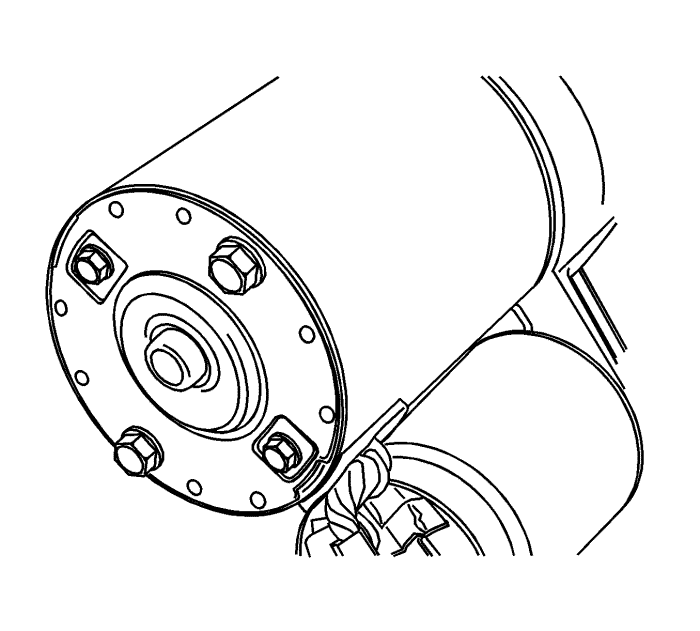
- Desmonte el motor de arranque. Consultar Sustitución del motor de arranque : LNQ → LF1 → LE5 .
- Desmonte los tornillos pasantes del motor de arranque.
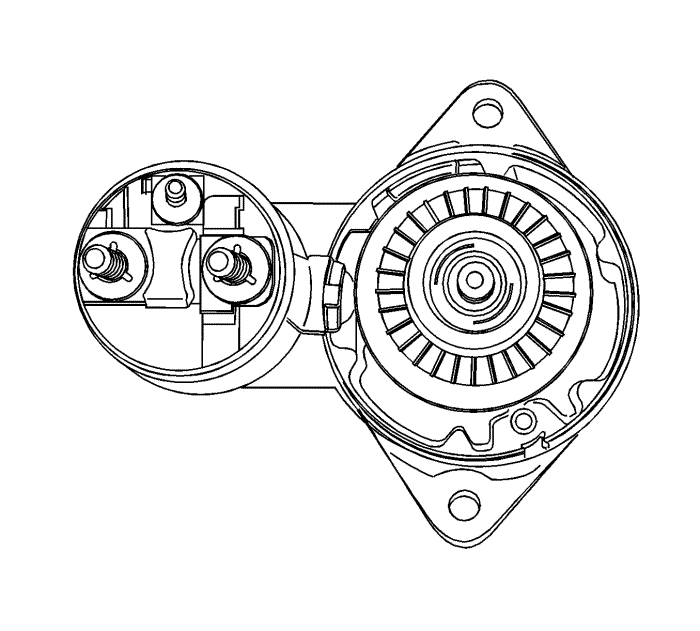
- Desmonte el conjunto portaescobillas y el armazón del lado del colector.
- Compruebe si las escobillas, los muelles de expulsión y los portaescobillas están dañados o desgastados. Sustituya el conjunto si fuera necesario.
- Compruebe el inducido para ver si gira libremente. Si no es así, desarme el conjunto inmediatamente, comenzando por el paso 14 de este procedimiento. De lo contrario, someta al inducido a una comprobación en vacío.
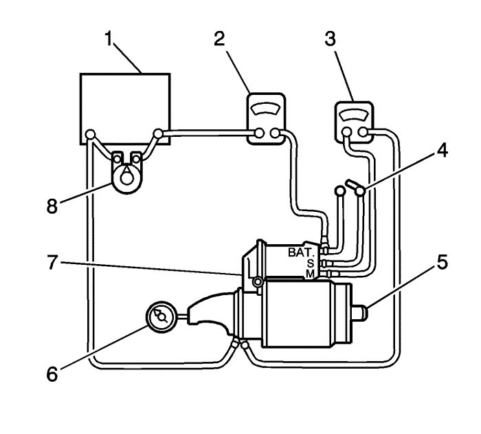
Nota: Complete la prueba en el menor tiempo posible para evitar el sobrecalentamiento del solenoide y posibles daños.
Nota: Si el consumo de corriente especificado no incluye el del solenoide, deduzca de la lectura del inducido el consumo de corriente especificado del devanado de contención de dicho solenoide.
- Para comenzar la prueba en vacío, cierre el interruptor (4) y compare las lecturas de las RPM (6), de la intensidad de corriente (2) y de la tensión (3) con las especificaciones. Consultar Sustitución del motor de arranque : LNQ → LF1 → LE5 . Efectúe las desconexiones sólo con el interruptor abierto. Utilice los resultados de la prueba del siguiente modo:
| 6.1. | El consumo de corriente nominal y la velocidad en vacío indican una condición normal del motor de arranque. |
| 6.2. | Un régimen de revoluciones bajo en combinación con un consumo de corriente elevado indica una fricción excesiva causada por cojinetes desgastados, sucios o apretados, un eje del inducido doblado, un cortocircuito en el inducido o bobinas inductoras en cortocircuito. |
| 6.3. | El no funcionamiento con un consumo de corriente elevado indican una derivación a masa directa de los terminales o de los inductores o unos cojinetes "gripados". |
| 6.4. | La falta de funcionamiento sin consumo de corriente indica la existencia de algún circuito de los inductores abierto, bobinas inductoras abiertas, muelles de escobillas rotos, escobillas desgastadas, un aislamiento excesivo entre las delgas del colector, u otras causas que pudieran impedir el contacto entre las escobillas y el colector. |
| 6.5. | Una velocidad baja en vacío y corriente baja indican una resistencia interna elevada y un consumo de corriente alto, lo que suele significar unos inductores en cortocircuito. |
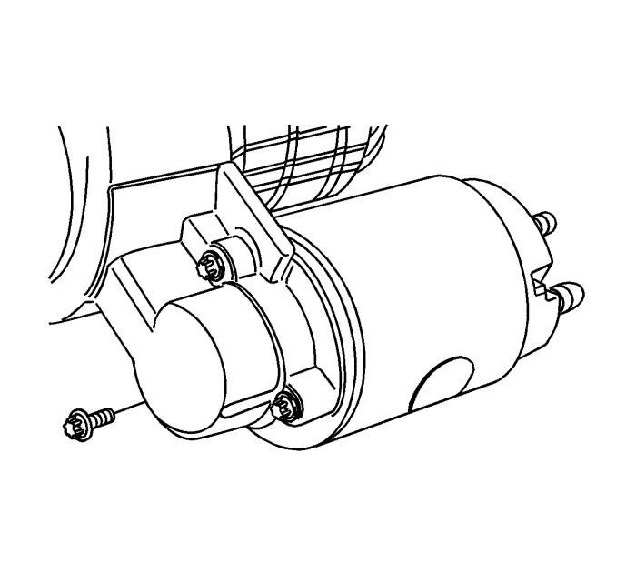
- Desmonte los tornillos del conjunto del solenoide.
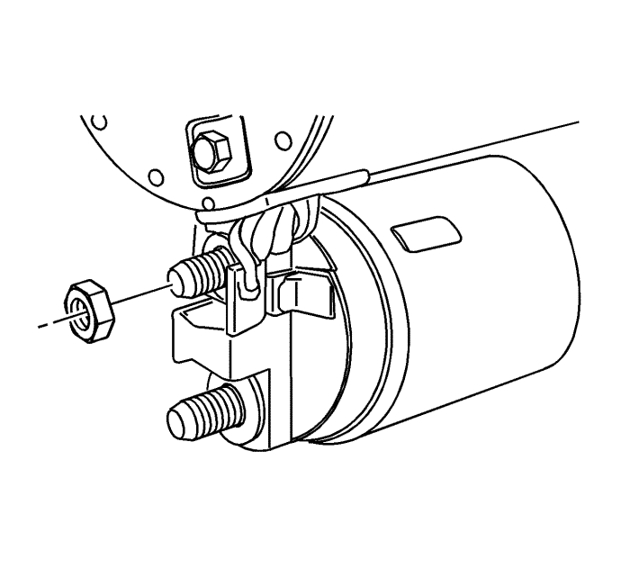
- Desmonte la tuerca del conector del inductor. Desenchufe el conector del inductor.
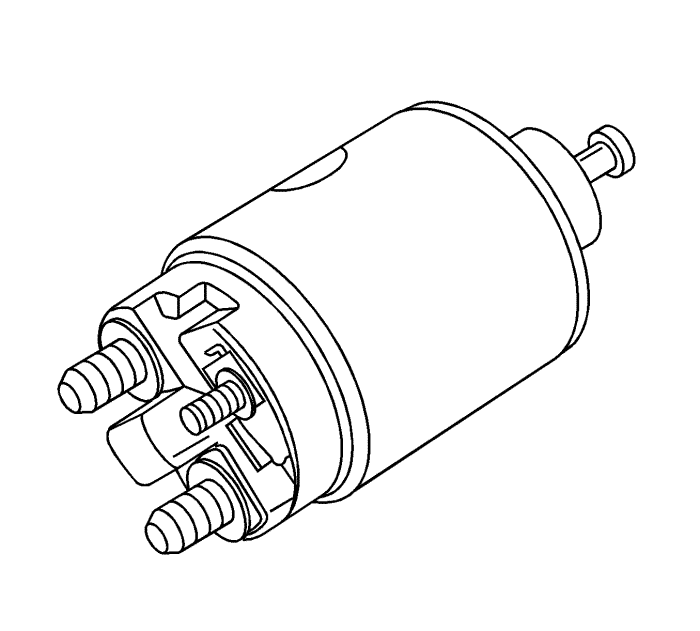
- Desmonte el muelle de retorno del émbolo.
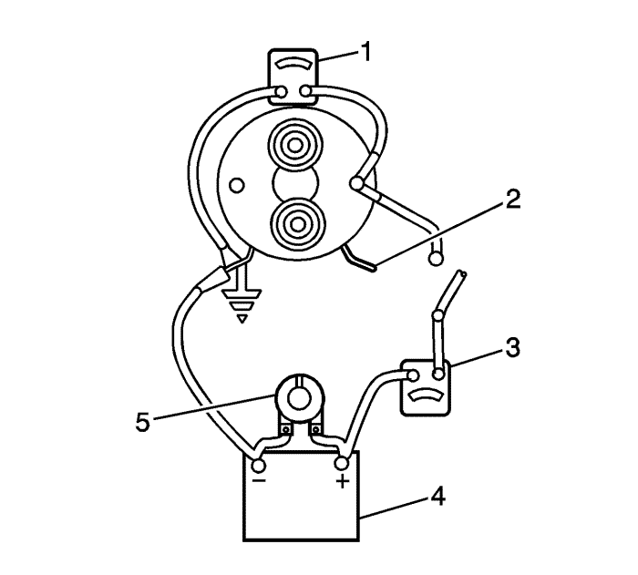
Nota: Si no se desmonta el solenoide del motor de arranque, se deben desmontar los bornes de cinta del conector del terminal en el solenoide antes de efectuar estas pruebas.
- Compruebe los devanados del solenoide verificando el consumo de corriente.
| 10.1. | Compruebe los bobinados de contención conectando un amperímetro (3) en serie con la tensión de 12 voltios de la batería, al terminal del interruptor y a masa. |
| 10.2. | Conecte una resistencia de placas de carbón (5) a la batería (4). |
| 10.3. | Ajuste la tensión a 10 voltios. La lectura del amperímetro (3) debe estar entre 13-19 amperios. La corriente descenderá a medida que se calienten los devanados. Las lecturas de consumo de corriente por encima de las especificaciones indican la existencia de espiras en cortocircuito o derivadas a masa en los devanados del solenoide. En ambos casos, es necesario sustituir el solenoide. Las lecturas de consumo de corriente que estén por debajo de las especificaciones indican una resistencia excesiva. La ausencia de lectura indica un circuito abierto. |
Nota: La corriente descenderá a medida que se calienten los devanados. Las lecturas de consumo de corriente por encima de las especificaciones indican la existencia de espiras en cortocircuito o derivadas a masa en los devanados del solenoide. En ambos casos, es necesario sustituir el solenoide. Las lecturas de consumo de corriente que estén por debajo de las especificaciones indican una resistencia excesiva. La ausencia de lectura indica un circuito abierto.
- Compruebe los dos devanados, conectándolos según la prueba anterior.
| 11.1. | Conecte a masa el terminal del solenoide del motor. |
| 11.2. | Ajuste la tensión a 10 voltios. La lectura del amperímetro debe estar entre 59-79 amperios. |
| 11.3. | Compruebe las conexiones y sustituya el solenoide si fuera necesario. |
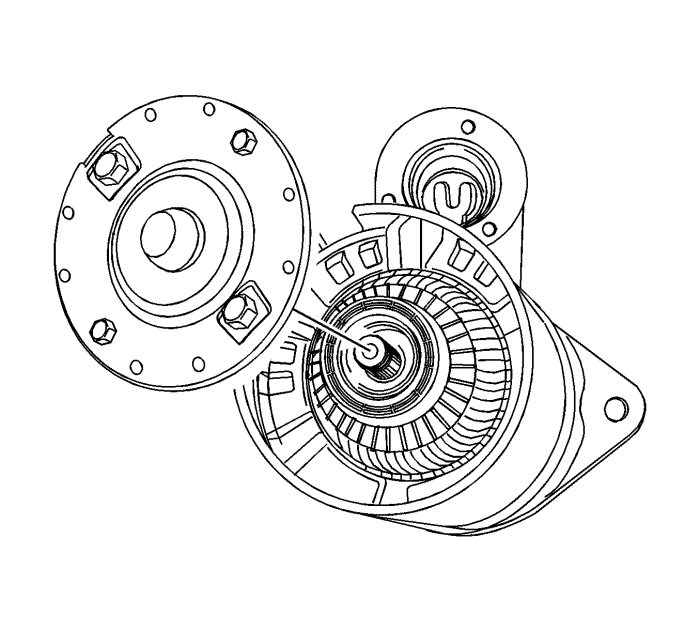
- Extraiga el armazón polar con el conjunto del inducido adjunto, deslizándolo hacia fuera del conjunto del motor de arranque.
- Desmonte la protección.
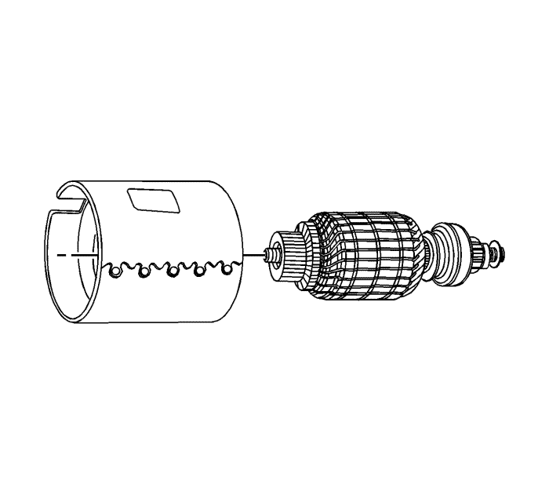
- Separe el armazón polar del inducido.
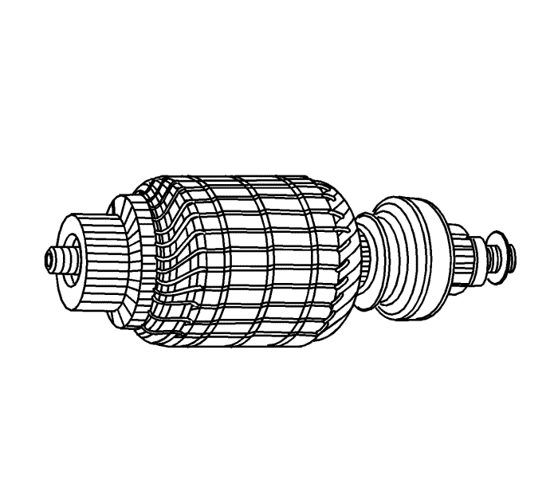
- Compruebe el eje y el piñón en busca de decoloraciones, daños o desgaste. Sustitúyalos si fuera necesario.
- Compruebe el colector del inducido. Si el colector está irregular, deberá darle la vuelta. El diámetro exterior del colector debe medir como mínimo 26,9-27,1 mm (1,059-1,067 pulg.) después de cortarlo por debajo o darle la vuelta. No permita que los colectores queden ovalizados.
- Compruebe los puntos donde los conductores del inducido se unen a las delgas del colector. Asegúrese de que exista una buena conexión. Una delga del colector quemada suele indicar que existe una conexión defectuosa.
- Si dispone de un comprobador de inducidos, verifique si hay cortocircuitos en el inducido colocándolo en el comprobador y sujetando una hoja de sierra sobre el núcleo del mismo mientras que se hace girar éste. Si la hoja de sierra vibra, sustituya el inducido.
- Vuelva a comprobar el inducido después de limpiar el espacio existente entre las delgas del colector. Si la hoja de sierra vibra, sustituya el inducido.
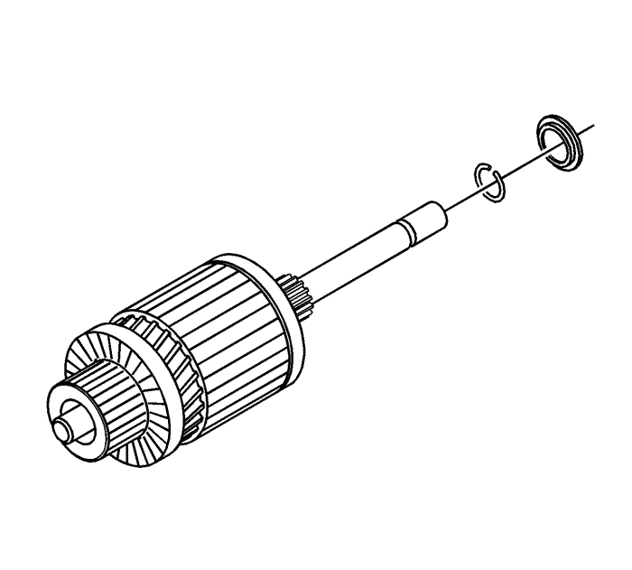
- Desmonte el anillo de retención de la ranura del eje.
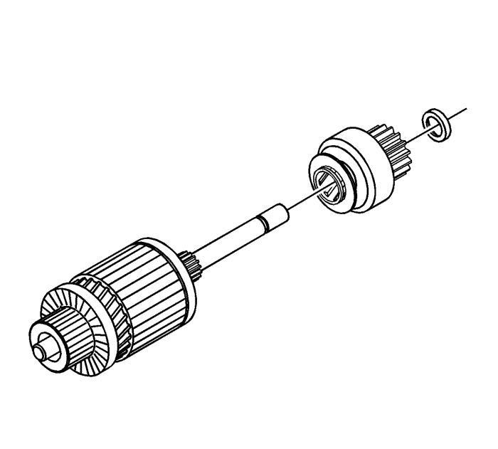
- Desmonte el tope del piñón y el accionamiento del propio eje.
- Si no se ha hecho en los pasos anteriores, desmonte los tornillos que sujetan el conjunto del solenoide a la carcasa y desmonte la tuerca del conector de la bobina inductora.
- Gire el solenoide 90 grados y desmóntelo junto con el muelle de retorno.
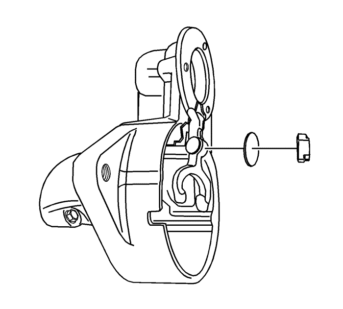
- Desmonte el émbolo con el conjunto de palanca de cambios y fuelle. Pruebe los devanados del solenoide, si no lo ha hecho en el paso 11.
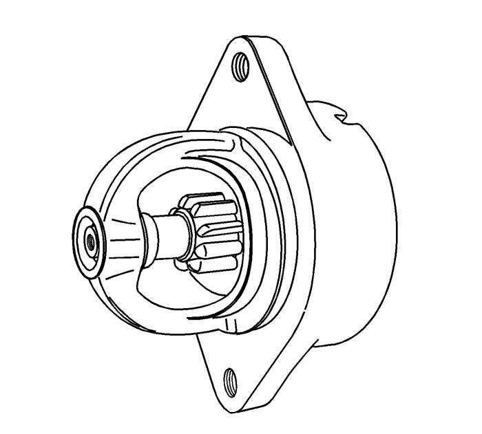
Nota: La holgura del piñón debe ser la correcta para evitar que los botones de la horquilla de la palanca de cambios rocen con el collarín de embrague durante el arranque.
- Cuando se haya desmontado el motor de arranque y se haya sustituido el solenoide, hay que comprobar la holgura del piñón.
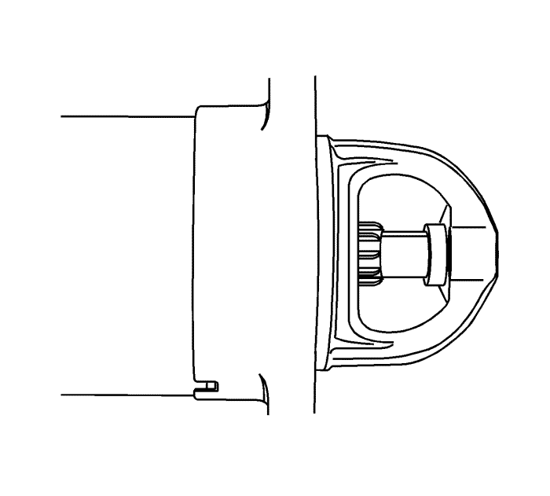
- Desenchufe el conector de la bobina inductora del terminal del solenoide en el motor y aísle, cuidadosamente, el conector.
- Conecte un cable de 12 voltios de la batería al terminal del interruptor del solenoide y el otro al armazón del motor de arranque.
- Conecte un puente, momentáneamente, desde el terminal del motor del solenoide al bastidor del motor de arranque, permitiendo el paso del piñón a la posición de arranque donde permanecerá hasta que se desconecte la batería.
Nota: El motor de arranque no dispone de un medio para ajustar la holgura del piñón. Si la holgura no queda dentro de los límites, compruebe si el montaje es incorrecto y sustituya las piezas desgastadas.
- Empuje el piñón hacia atrás todo lo que sea posible para compensar cualquier movimiento y compruebe la holgura con una galga de espesores. La holgura debe ser 0,25-3,56 mm (0,01-0,14 pulg.).